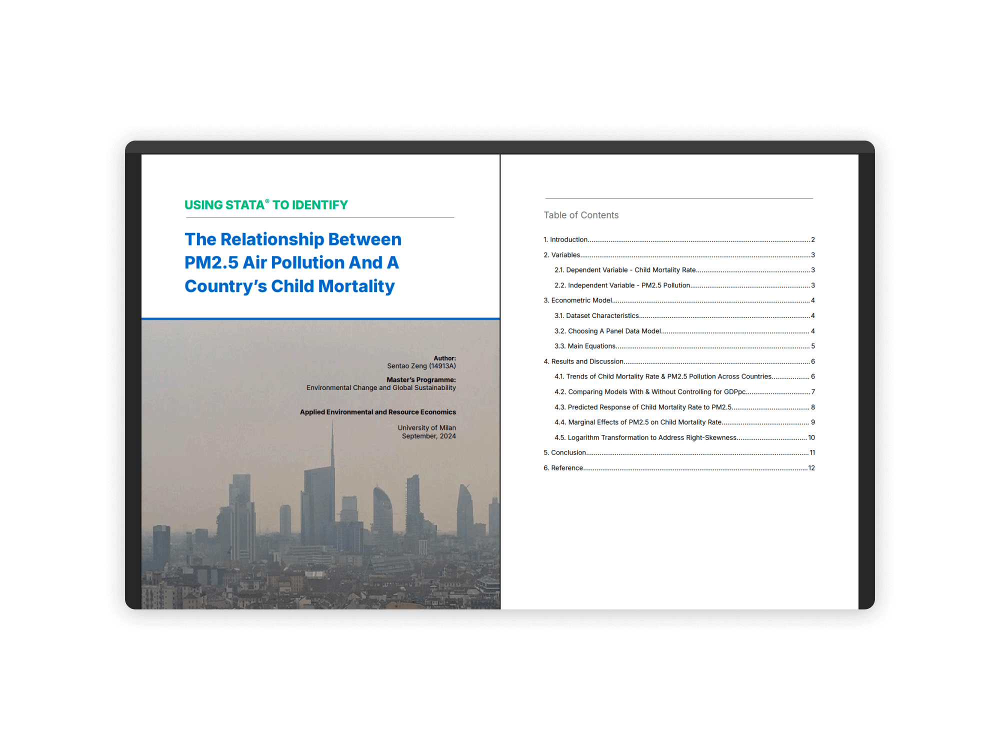

1. Biodiversity & Species Conservation
Habitat Loss & IUCN Red List Assessment: Dendrobates tinctorius
Evaluated the impact of land-use change on the suitable habitat and Area of Occupancy (AOO) of the Dyeing Poison Dart Frog (Dendrobates tinctorius) across French Guiana. By combining spatial reclassification with MaxEnt ecological niche modeling and IUCN Red List Criteria in RStudio, this study projects a 39.5% future habitat loss, supporting a reclassification recommendation to Near Threatened (NT).
Skills & Key Highlights
- Species Distribution & MaxEnt Modeling: Modeled environmental suitability and species occurrence across forest and wetland ecosystems in the Guiana Shield.
- Spatial Data Reclassification: Custom-scripted
<reclass_dentin.txt>in RStudio to filter land-use categories (e.g., forest, inland wetlands) and compute AOO raster surfaces. - IUCN Red List Criteria Application: Quantified historical habitat change (<0.2% loss between 2005 and 2012) versus future land-use projections to assess extinction risk under Criterion A3.